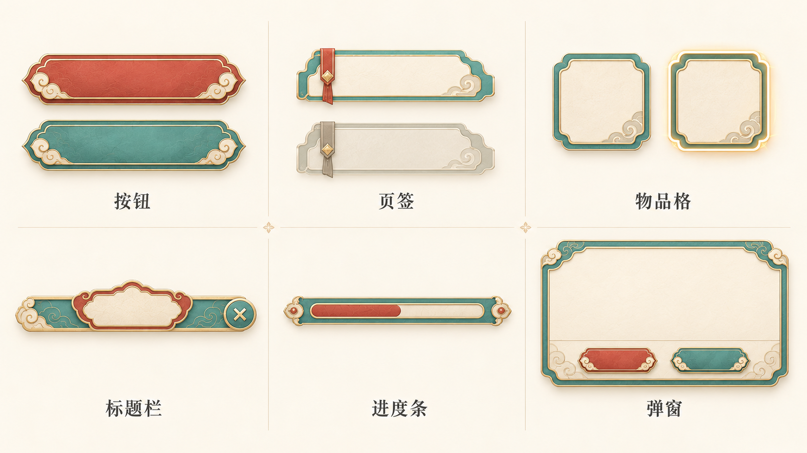
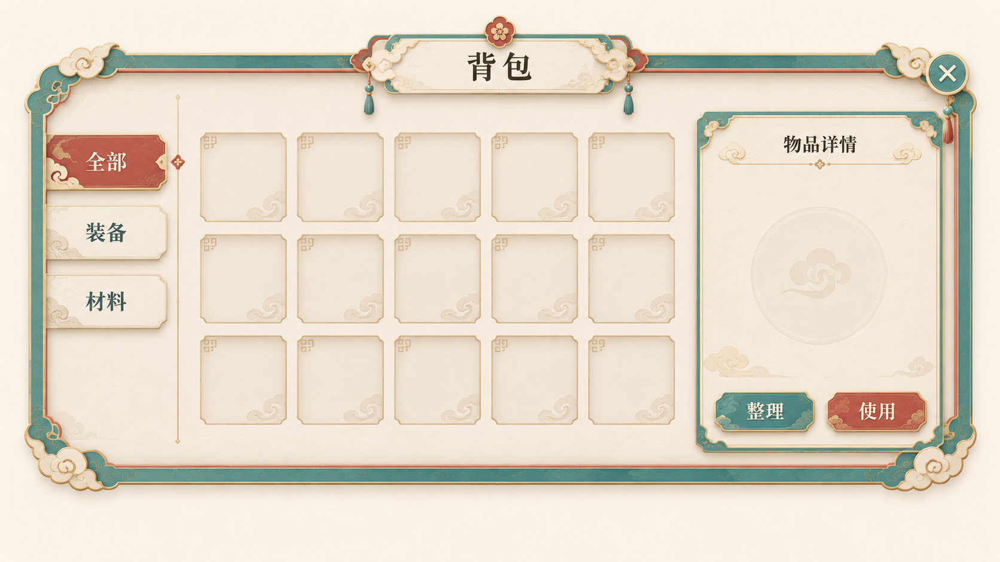

仙侠纸艺·适度纹饰控件
原图1672×941 · 设计基准1920×1080 · 整体效果参考，尚未拆分控件
按钮两端细云纹、折角和窄分层边框带回仙侠游戏感；页签用小红缎带，物品格选中态细金边发光，标题栏有造型。内容区留白，无密集花枝。仍是样式效果板，独立PNG未制作。
原图
仙侠纸艺·适度纹饰背包
原图1672×941 · 设计基准1920×1080 · 整体效果参考，尚未拆分控件
背包采用青绿窄边带、细金云纹、造型标题栏和角部云饰，页签/物品格/按钮共享折角语言；无花枝堆叠，内容区留白。标题周围装饰比控件板略多，等待用户判断该密度。整体图非可编辑UI。
原图